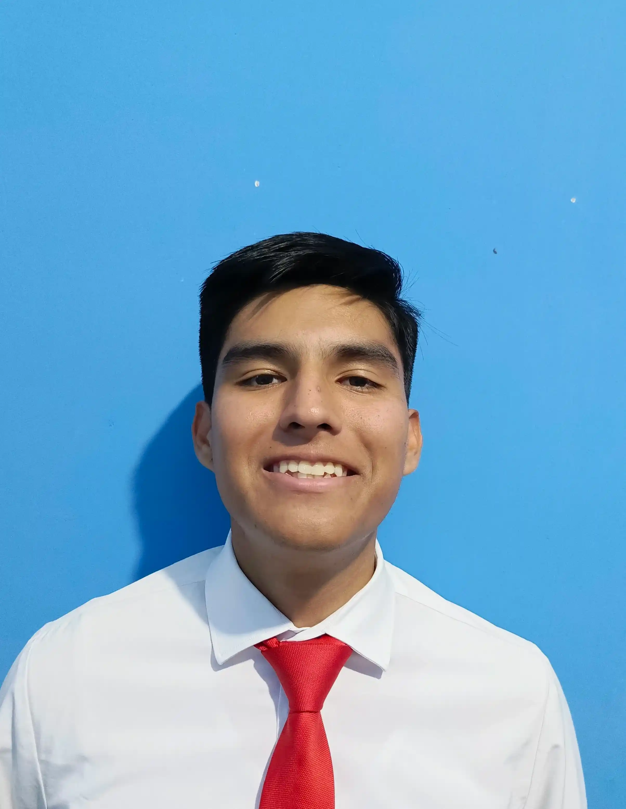

My name is Pablo Landivar. I am from Bolivia. I am a student at BYU-Pathway Worldwide. I am studying software development. I am currently taking the WDD 131 course. I am excited to learn more about web development, I am 21 years old, I love playing soccer, and I am a member of The Church of Jesus Christ of Latter-day Saint, I am a returned missionary, I serve in Ecuador in Ecuador Quito North mission, I love Ecuador.
About Me
Bolivia

Bolivia is a country in central South America, with a varied terrain spanning Andes Mountains, the Atacama Desert and Amazon Basin rainforest. At more than 3,500m, its administrative capital, La Paz, sits on the Andes’ Altiplano plateau with snow-capped Mt. Illimani in the background.
Web Dev Resources
About Me
My name is Pablo Landivar. I am from Bolivia. I am a student at BYU-Pathway Worldwide. I am studying software development. I am currently taking the WDD 131 course. I am excited to learn more about web development, I am 21 years old, I love playing soccer, and I am a member of The Church of Jesus Christ of Latter-day Saint, I am a returned missionary, I serve in Ecuador in Ecuador Quito North mission, I love Ecuador.
Web and Computer Programming certificate
Total Credits for Certificate 1: 0